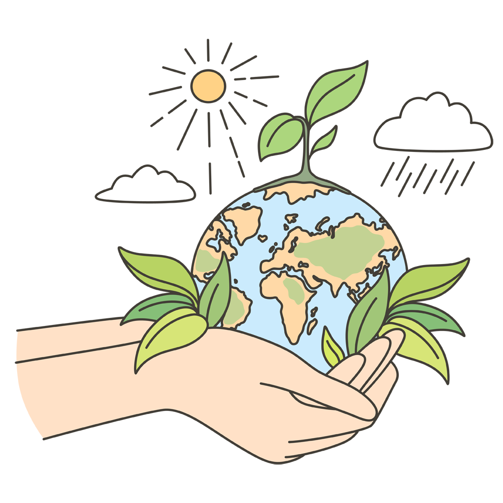

L'educazione finanziaria insegna le opportunità e rischi degli investimenti in vista di una buona gestione dei propri capitali.
In particolare aiuta ad acquistare padronanza di concetti come:

Ritengo che aumentare le proprie conoscenze e competenze in ambito finanziario abbia molti vantaggi, come aiutare a cogliere le opportunità migliori ed imparare a evitare di cadere in raggiri, ma soprattutto prendere decisioni consapevoli, che consentono di migliorare nel tempo la propria posizione economica.
È per questi motivi che ho trovato questo percorso molto interessante.

La sostenibilità dell'ambiente è un concetto che si riferisce alla capacità di mantenere l'equilibrio ecologico e preservare le risorse naturali per le generazioni presenti e future. Coinvolge una serie di pratiche e decisioni che mirano a ridurre l'impatto negativo sull'ambiente, come:
Credo che la sostenibilità dell'ambiente sia estremamente importante perché aiuta a preservare le risorse naturali, proteggere la biodiversità, ridurre l'inquinamento, mitigare i cambiamenti climatici e assicurare un ambiente sano per le attuali e future generazioni.
L'Apple Developer Academy è un programma di formazione intensiva di 9 mesi, che offre ai partecipanti la possibilità di apprendere a sviluppare app per iOS e macOS, con l'obiettivo di formare nuovi talenti e promuovere l'innovazione.
Il programma è strutturato in modo da fornire ai partecipanti una solida base di conoscenze e competenze pratiche, attraverso lezioni teoriche, esercitazioni pratiche e progetti reali.
Durante la visita guidata alla Apple Developer Academy, ho avuto l'opportunità di conoscere esperti del settore, sviluppatori e designer, che hanno condiviso con me non solo informazioni importanti sul percorso formativo, ma soprattutto le loro esperienze.
Queste informazioni mi hanno aiutato a valutare meglio le mie opportunità di carriera nel settore dell'informatica.

"C'è ancora domani" è la storia di Delia, una donna semplice dei quartieri popolari di Roma.
I profondi drammi personali che Delia vive rappresentano quelli che incontravano tutte le donne durante la Ricostruzione.
Per certi versi, dunque, "C'è ancora domani" è uno spaccato di vita quotidiana di ottant'anni fa.
"C'è ancora domani" è un film che mi ha colpito profondamente, perché racconta una storia di vita quotidiana e di drammi personali che, pur ambientata nel passato, è ancora attuale e rilevante.
Il film mi ha fatto riflettere su temi importanti come la violenza domestica, l'amore, la malattia e la morte, ma soprattutto la discriminazione delle donne.